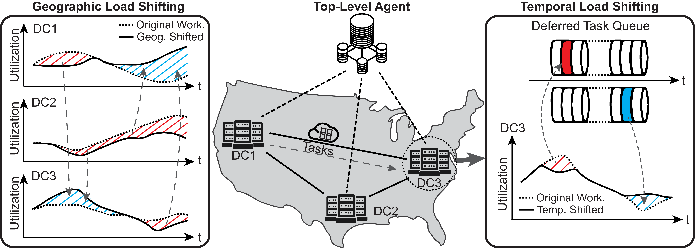
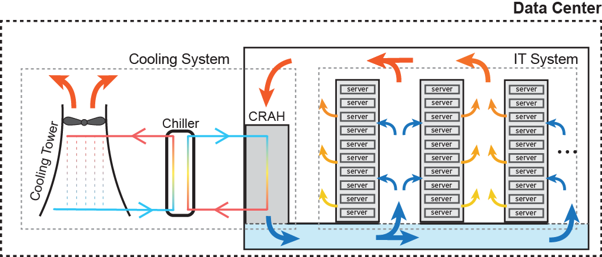

Overview¶
Data Center Cluster Model¶
High-level overview of the operational model of a Green-DCC data center cluster is given below:
{kind=link}
The high-level components of Green-DCC are:
Top-Level Agent: Central agent responsible for all spatio-temporal scheduling decisions. At each decision step it determines which tasks to execute immediately, which to defer, and in which datacenter each task should run.
Additional Controls: Optional modules (e.g., energy storage) that augment the Top-Level Agent’s ability to optimize for multiple objectives—reducing carbon footprint, minimizing energy usage and cost, and potentially addressing water usage.
Scheduling Strategies¶
Sustain-Cluster uses a unified, agent-based spatio-temporal scheduling framework, executed entirely by the Top-Level Agent.
Geographic Load Shifting Strategy¶
Dynamically moves workloads between DC1, DC2, DC3, etc., based on the Top-Level Agent’s real-time view of each datacenter’s carbon intensity, energy price, temperature, and utilization. For example, if DC1’s CI and temperature spike, the agent may route new or deferred tasks to DC3, reducing DC1’s load and leveraging DC3’s more favorable conditions.
Temporal Scheduling Decisions¶
All temporal deferral logic is centralized in the Top-Level Agent. On each step, it evaluates every incoming or queued task and chooses to:
Schedule immediately in the best datacenter, or
Defer to a later time step when overall conditions (lower CI, cooler temperatures, smoother utilization) are more favorable.
Deferred tasks reside in the global scheduler queue until the agent dispatches them.
Spatio-Temporal Scheduling Benefits¶
By centralizing both where and when decisions, Sustain-Cluster exploits synergies across space and time: it drives down energy costs, cuts carbon emissions, and smooths utilization by holistically reacting to workload, price, and environmental signals.
{kind=link}
Data Center Model¶
Green-DCC models individual datacenters as follows:
{kind=link}
Workloads arrive from a proxy client. Some jobs may be flexible (deferrable); the Top-Level Agent manages all deferrals globally. Servers generate heat, which is removed by an HVAC loop:

Warm air → Computer Room Air Handler (CRAH)
Chilled-water loop cools air → returns to IT hall
Separate water loop rejects heat → cooling tower
{kind=link}
Large datacenters may also include battery banks. Batteries charge when CI is low and discharge to support the DC during high-CI periods.
Input Data Sources¶
Green-DCC ingests external data streams to simulate realistic conditions:
Workload data – time-series of computational demand
Weather data – ambient temperature, humidity, etc.
Carbon Intensity data – grid CO₂ intensity time-series
For more details on environments, RL algorithms, reward functions, and external data handling, see: